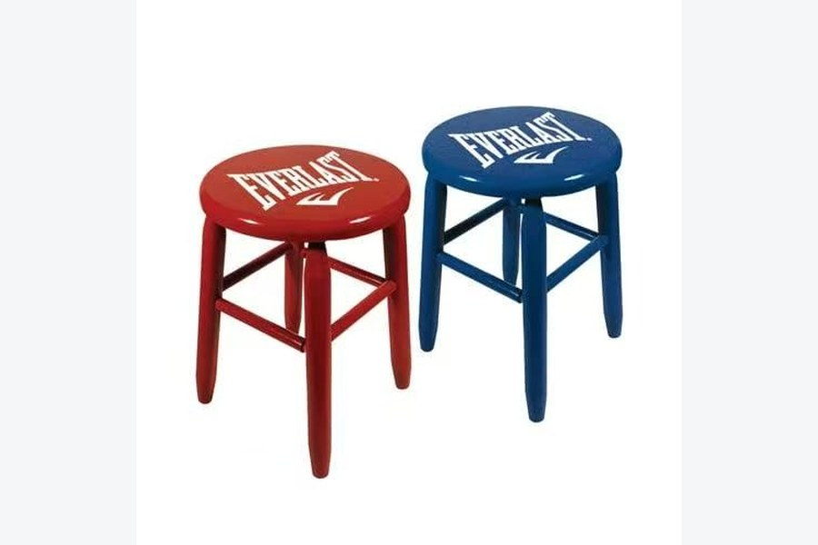
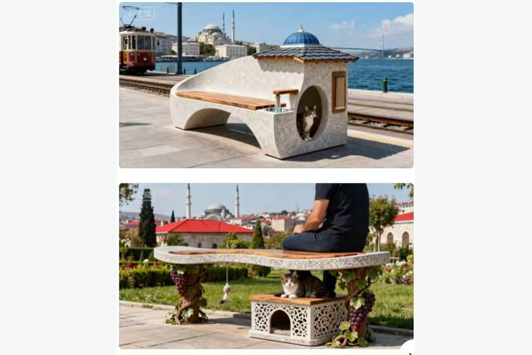
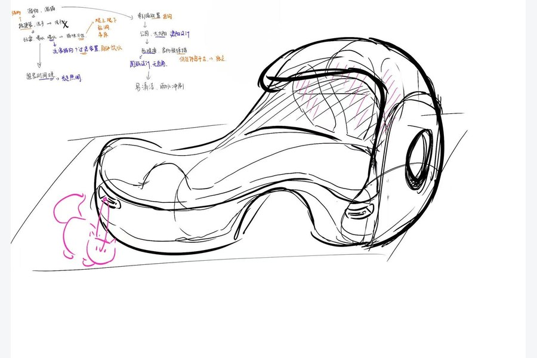
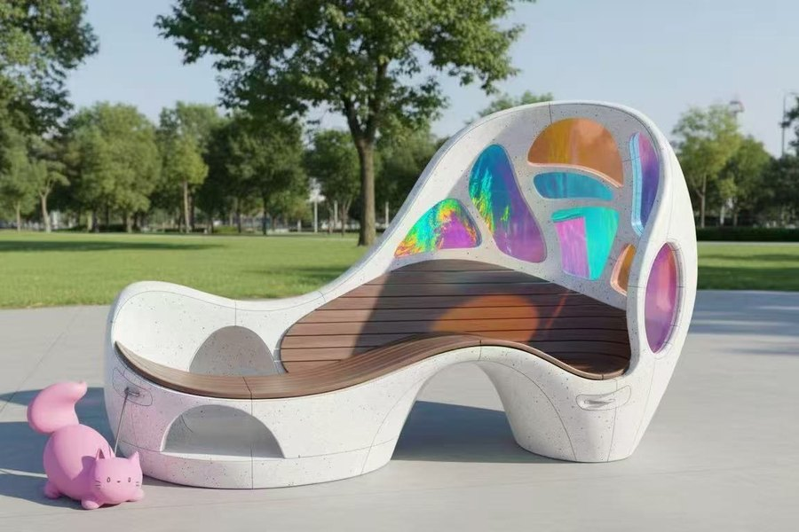

人宠共处公共座椅
形态概念
从行为观察推形态，而不是从造型推造型。
01研究
先看人怎么和宠物一起待着
方法用的是民族志：访谈十人 + 田野观察记录。我要找的不是「养宠物的人需要什么」，是他们在公共空间里实际怎么处理彼此的距离。
观察里最反复出现的一个场景：下雨时，人在雨树下躲雨，狗也在下面。人和宠物共享同一片遮蔽，但身体始终不同高度、不同姿态——不是「一起坐」，是「同处一个荫下」。
这个观察推翻了什么
最初的方向是「给宠物也做一个座位」，也就是把人的椅子复制一份缩小。观察否掉了它：宠物在公共空间里的行为不是「坐」，是待在主人附近、能随时起身、能看见外面。
我以为
宠物需要一个自己的座位
实际是
宠物需要的是一个「随时能走的附近」
所以我改了
不做第二个座位，做同一片共享遮蔽下的两种高度
代价
形态更难读：一张椅子看起来不像「人宠共用」
访谈
10 人
观察
田野记录
演进
独凳 → 猫窝嵌入 → 侧端开洞 → 圆座体
02从行为到形态
三个行为，对应三个形态决定
| 观察到的行为 | 形态上对应的决定 | 写进方案的理由 |
|---|---|---|
| 宠物随时起身离开 | 座体不封闭，三面开敞 | 一旦有「进去」的动作，宠物就不进 |
| 主人要能看见宠物 | 两侧高度差，不做隔断 | 视线要能穿过，遮蔽不等于遮挡 |
| 下雨时挤在同一片荫下 | 一片连续的顶，两段不同高度 | 共享的是顶，不是座面 |
四轮演进，最后一张是手绘
形态不是一次成型的。前四步是概念渲染（AI 文生图，方向与取舍由我定），第五张是我用马克笔画的终稿线稿，第六张是它的渲染表达。

人要一直牵着

座体侧面开一个窝
木条座面 + 贯通侧洞

三个拱洞，无直角

旁注：拴绳、拾便袋、遮阳、易清洁

同一形态的落地表达
图 1—4 为概念渲染，保留原始水印；图 5 为我手绘的终稿线稿，旁注是当时边画边记的约束：拴绳固定、拾便袋、遮阳、易清洁、无直角。形态三来源（贝壳的结构轮廓、雨树叶缘的卷边、高迪的彩色碎拼）贯穿在这四轮里，不是事后总结的版本史。
03诚实的边界
这个项目的弱项，我自己说
它是课程项目，只有概念方案与视觉表达，没有实物、没有打样、没有真实场地测试。所以它在我这本册子里排最后——不是因为它做得最少，是因为它离「被真实约束卡住」最远。
留着它的理由只有一个：它是一次完整的「从观察到形态」的推演，而这恰好是我在 B 端界面里做的事——先看场景，再定形态，只是媒介从座体换成了屏幕。